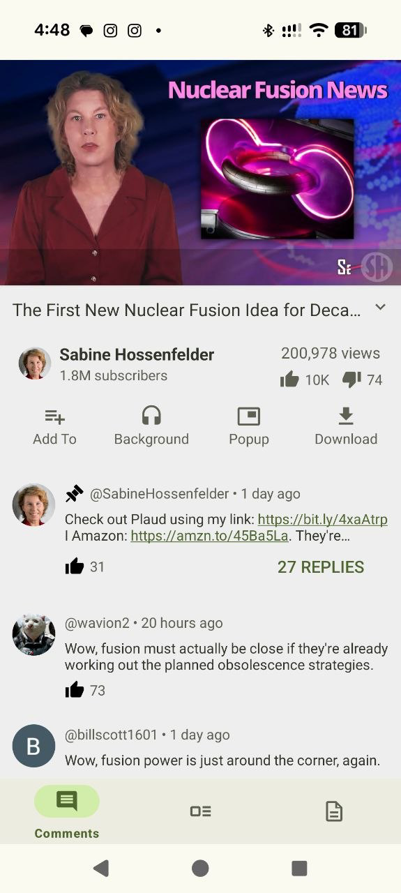
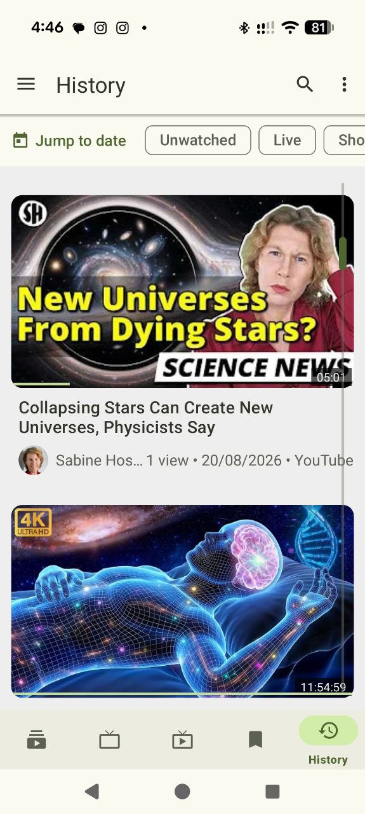

Independent. Open source. Android.
Watch. Listen.
Make it yours.
Your favorite streams, a library you control, and playback that fits your day. All without a platform account.
- Android 6.0+
- No account required
- GPLv3
Stable 1.41.0 · Release notes · Privacy by design, with clear boundaries

More than one way to discover.
Built around how you watch
One app.
Several ways to play.
Switch from watching to listening, keep a floating player nearby, or take supported media offline. Choose what works for you.
Playback that adapts
Main player, Listen mode, background audio, popup and optional native picture-in-picture.
ExploreA library that stays yours
Local subscriptions, playlists and profiles. Organize without rebuilding a platform account.
ExploreOffline, on your schedule
Individual and batch downloads, optional channel downloads and daily download windows.
ExploreMake room for your preferences
Material 3 surfaces, configurable navigation, accessible text and data-only theme packs.
Explore
Follow what matters
Your subscriptions.
Your own rhythm.
Bring channels together in groups, tune What’s New, and separate a study library from everyday watching with local profiles.
- Channel groups and filtered subscription feeds
- Local playlists, bookmarks and smart rules
- Optional encrypted sync between paired devices
Beyond the next video
More of your media,
in one place.
Read a transcript, revisit a timestamped note, browse a radio station or play a local file. Useful tools, with their limits explained.
Learn at your pace
Searchable transcripts, timestamped notes and optional study tools for designated content.
ExploreDiscover live audio and TV
Radio Browser, community TV directories and your supported HTTPS/M3U sources.
ExploreReach your other screens
Android TV controls, audio on Android Auto, and compatible FCast/Chromecast receivers.
ExplorePrivacy, explained clearly
A local-first app.
Deliberate connections.
No WizeStream account, advertising SDK or analytics SDK. Optional network features remain choices, and media services still receive normal connection information.
Understand the privacy modelFind the right fit
Compare approaches,
not just checkmarks.
See WizeStream alongside NewPipe, PipePipe and LibreTube. The comparison includes their strengths, release context and source references.
The handbook
Get comfortable.
Then go deeper.
Getting started
Install the right build, make a first library, and understand release channels.
Playback & audio
Learn player modes, queues, captions, gestures, 360° viewing and A–B repeat.
Downloads & offline
Choose folders, batch media, set download windows and manage storage.
Backups & migration
Move compatible NewPipe, LibreTube and FreeTube data without losing originals.
Privacy & networking
Understand local storage, optional services, proxies and Invidious trust.
Troubleshooting
Resolve common setup issues and write a useful, privacy-conscious report.
Make room for what you enjoy
Your next stream starts here.
Free and open-source software for Android. Choose the build that fits your device.